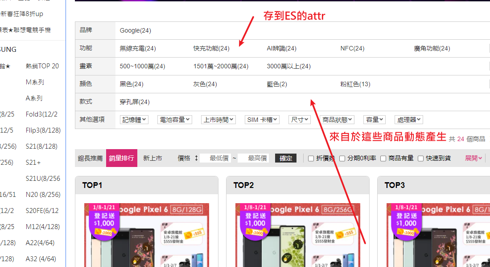
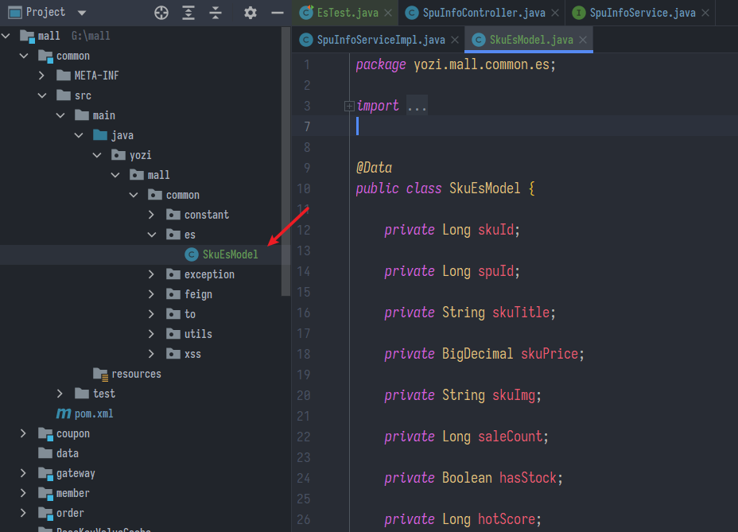
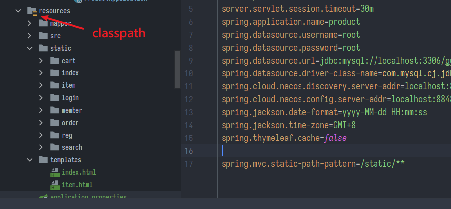
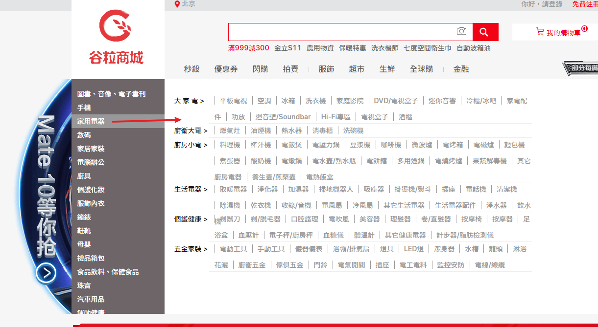

抽取關鍵字至ES、Thymeleaf模板引擎
SpringBoot微服務項目筆記-09
商品上架
- 上架，除了把狀態改成上架，為了商品能被快速搜索到，還要提取出關鍵訊息存到ES
- 簡單來說就是把該商品的sku提取出來，存到ES的index中，當用戶搜索商品時，就可以依照分組動態產生篩選條件，依照得分呈現商品屬性

- 很繁瑣，但是不難
- SpuInfoController.java
// 上架
@PostMapping("/{spuId}/up")
public R spuUp(@PathVariable Long spuId) {
spuInfoService.up(spuId);
return R.ok();
}
- SpuInfoServiceImpl.java
- 知識點:用stream把list轉map
// 商品上架
@Override
public void up(Long spuId) {
// 先從spuID查出對應的所有sku
List<SkuInfoEntity> skuInfoEntities = skuInfoService.getSkusBySpuId(spuId);
// 先查出當前sku的所有可以被用來檢索的規格屬性
List<ProductAttrValueEntity> baseAttrs = productAttrValueService.baseAttrListforspu(spuId);
List<Long> attrIds = baseAttrs.stream().map(ProductAttrValueEntity::getAttrId).collect(Collectors.toList());
// sku當初填值時就有一欄是"是否能被檢索
List<Long> searchAttrIds = attrService.selectSearchAttrs(attrIds);
// 轉換為Set集合
Set<Long> idSet = searchAttrIds.stream().collect(Collectors.toSet());
// 過濾留下能被檢索的Attrs
List<SkuEsModel.Attrs> attrsList = baseAttrs.stream().filter(item -> {
return idSet.contains(item.getAttrId());
}).map(item -> {
// 封裝進SkuEsModel.Attrs
SkuEsModel.Attrs attrs = new SkuEsModel.Attrs();
BeanUtils.copyProperties(item, attrs);
return attrs;
}).collect(Collectors.toList());
// 接著查是否有庫存，先把ID抽成list方便一次查完
List<Long> skuIdList = skuInfoEntities.stream()
.map(SkuInfoEntity::getSkuId)
.collect(Collectors.toList());
// 發送遠程調用，庫存系統查詢是否有庫存
Map<Long, Boolean> stockMap = null;
try {
R skuHasStock = wareFeignService.getSkuHasStock(skuIdList);
TypeReference<List<SkuHasStockTo>> typeReference = new TypeReference<List<SkuHasStockTo>>() {
};
// 把查詢結果拿出來，裝到Map<Long, Boolean>
stockMap = skuHasStock.getData(typeReference).stream().collect(Collectors.toMap(SkuHasStockTo::getSkuId,
SkuHasStockTo::getHasStock));
} catch (Exception e) {
log.error("庫存服務查詢異常：原因{}", e);
}
Map<Long, Boolean> finalStockMap = stockMap;
// 要傳去ES的商品訊息
List<SkuEsModel> collect = skuInfoEntities.stream().map(sku -> {
// 組裝需要的數據
SkuEsModel esModel = new SkuEsModel();
BeanUtils.copyProperties(sku, esModel);
// 其他對不上，需要手動添加的
esModel.setSkuPrice(sku.getPrice());
esModel.setSkuImg(sku.getSkuDefaultImg());
// 設置庫存信息，如果遠程調用失敗就先當作有
if (finalStockMap == null) {
esModel.setHasStock(true);
} else {
esModel.setHasStock(finalStockMap.get(sku.getSkuId()));
}
// TODO 2、熱度評分。0
esModel.setHotScore(0L);
// 查詢品牌和分類的名字信息
BrandEntity brandEntity = brandService.getById(sku.getBrandId());
esModel.setBrandName(brandEntity.getName());
esModel.setBrandId(brandEntity.getBrandId());
esModel.setBrandImg(brandEntity.getLogo());
CategoryEntity categoryEntity = categoryService.getById(sku.getCatalogId());
esModel.setCatalogId(categoryEntity.getCatId());
esModel.setCatalogName(categoryEntity.getName());
// 設置子屬性，來自前面查的列表
esModel.setAttrs(attrsList);
return esModel;
}).collect(Collectors.toList());
// 發到ES
R r = searchFeignService.productStatusUp(collect);
if (r.getCode() == 0) {
// 遠程調用成功
// 修改當前spu的狀態
this.baseMapper.updateSpuStatus(spuId, ProductConstant.ProductStatusEnum.SPU_UP.getCode());
} else {
//遠程調用失敗
//TODO 7、重複調用？接口冪等性:重試機制
}
}
- 用List查SQL的拼接寫法
List<Long> selectSearchAttrs(@Param("attrIds") List<Long> attrIds)
<select id="selectSearchAttrs" resultType="java.lang.Long">
SELECT attr_id FROM pms_attr WHERE attr_id IN
<foreach collection="attrIds" item="id" separator="," open="(" close=")">
#{id}
</foreach>
AND search_type = 1
</select>
- 查庫存，WareSkuServiceImpl.java
@Override
public List<SkuHasStockTo> getSkuHasStock(List<Long> ids) {
List<SkuHasStockTo> collect = ids.stream().map(e -> {
Long count = baseMapper.getStock(e);
SkuHasStockTo to = new SkuHasStockTo();
to.setSkuId(e);
to.setHasStock(count > 0);
return to;
}).collect(Collectors.toList());
return collect;
}
- 查庫存SQL，要減去鎖定的庫存
- 當參數只有一個就不用@Param
Long getStock(Long e);
<select id="getStock" resultType="java.lang.Long">
SELECT SUM(stock - stock_locked)
FROM wms_ware_sku
WHERE sku_id = #{e}
</select>
ES部分
- 為了傳遞資料給ES伺服，建立一個模型

-
搭一個子模組search
- 一樣，引依賴、造config 參考前篇
-
ElasticSaveController.java
/**
* 上架商品 /search/save/product
*
* @param skuEsModels
* @return
*/
@PostMapping(value = "/product")
public R productStatusUp(@RequestBody List<SkuEsModel> skuEsModels) {
boolean status = false;
try {
status = productSaveService.productStatusUp(skuEsModels);
} catch (IOException e) {
// log.error("商品上架錯誤{}",e);
return R.error(BizCodeEnum.PRODUCT_UP_EXCEPTION.getCode(), BizCodeEnum.PRODUCT_UP_EXCEPTION.getMessage());
}
if (status) {
return R.error(BizCodeEnum.PRODUCT_UP_EXCEPTION.getCode(), BizCodeEnum.PRODUCT_UP_EXCEPTION.getMessage());
} else {
return R.ok();
}
}
- ProductSaveServiceImpl.java
@Override
public boolean productStatusUp(List<SkuEsModel> skuEsModels) throws IOException {
// 1.在ES中建立索引，建立mapping（doc/json/product-mapping.json）
// 2.在ES中保存這些數據
BulkRequest bulkRequest = new BulkRequest();
for (SkuEsModel skuEsModel : skuEsModels) {
// 構造保存請求
IndexRequest indexRequest = new IndexRequest(EsConstant.PRODUCT_INDEX);
// ES中的ID就是SKUID
indexRequest.id(skuEsModel.getSkuId().toString());
String jsonString = JSONUtil.toJsonStr(skuEsModel);
indexRequest.source(jsonString, XContentType.JSON);
// 批量保存
bulkRequest.add(indexRequest);
}
BulkResponse bulk = esRestClient.bulk(bulkRequest, ElasticConfig.COMMON_OPTIONS);
// TODO 如果批量錯誤
boolean hasFailures = bulk.hasFailures();
// 收集結果印到log
List<String> collect = Arrays.asList(bulk.getItems()).stream().map(item -> {
return item.getId();
}).collect(Collectors.toList());
log.info("商品上架完成：{}", collect);
return hasFailures;
}
- 註冊到feign等待調用
記一個5小時的坑
- 這邊用到feign遠程調用，由於查庫存想一次查一批，所以傳了一個List過去，沒想到竟然是個悲劇的開端
- 因為傳遞時轉JSON會擦掉泛型，所以傳遞
List<XXX>的時候，轉回來反序列化不注意就會出事 - 我天真的以為用castvar去接就好，接了也沒報錯，還能sout出東西，乍看沒啥不對勁
- 結果下面死活報錯
java.lang.ClassCastException: java.util.LinkedHashMap cannot be cast to xxxx
- 我就一直在找原因，原來強轉接到的List是假象，是**
LinkedHashMap**假扮的，因為SpringMVC將Object轉json會變成key-value形式，而轉回來它也這麼覺得，所以是一個Map，害我試到懷疑人生，熬夜到天明，氣氣氣氣氣
解法
- 老師在這邊對R封裝了一個方法
- 用的是
com.alibaba.fastjson的包
- 用的是
public R setData(Object data) {
put("data", data);
return this;
}
// 利用fastjson進行反序列化
public <T> T getData(TypeReference<T> typeReference) {
Object data = get("data");
String jsonString = JSON.toJSONString(data);
T t = JSON.parseObject(jsonString, typeReference);
return t;
}
// 利用fastjson進行反序列化
public <T> T getData(String key, TypeReference<T> typeReference) {
Object data = get(key);
String jsonString = JSON.toJSONString(data);
T t = JSON.parseObject(jsonString, typeReference);
return t;
}
- 返回的時候把list裝進去了，WareSkuController.java
List<SkuHasStockTo> list = wareSkuService.getSkuHasStock(ids);
return R.ok().setData(list);
- 最後接收的時候，用
TypeReference去指定反序列化的List<>類型- 後面的
() {}因為它是一個匿名內部類，別漏了
- 後面的
R skuHasStock = wareFeignService.getSkuHasStock(skuIdList);
TypeReference<List<SkuHasStockTo>> typeReference = new TypeReference<List<SkuHasStockTo>>() {
};
// 把查詢結果拿出來，裝到Map<Long, Boolean>
stockMap = skuHasStock.getData(typeReference).stream().collect(Collectors.toMap(SkuHasStockTo::getSkuId,
SkuHasStockTo::getHasStock));
Thymeleaf
模板引擎 = 做模板填入資源內容，引擎幫我生成HTML頁面
Thymeleaf是一個XML/HTML5模板引擎，能夠應用轉換於模板檔案，以顯示應用程式產生的資料，簡單來說只要照它的規則寫好模板與靜態資源，就能快速做出能看的HTML頁面
- 有點回到Javaweb的感覺，thymeleaf就像JSP的強化版，它能做到動靜分離，但是不能前後分離
- 優勢在於簡單，直觀(html直接就能看，相較於JSP要有網路服務捧著)、渲染快
- 不過現在幾乎都是前後端分離，這個技術比較少見了
使用
- 引依賴，版本號給父模組的spring-boot管
<dependency>
<groupId>org.springframework.boot</groupId>
<artifactId>spring-boot-starter-thymeleaf</artifactId>
</dependency>
- 放入靜態資源，這個黃色圖標就是classpath
- 靜態檔案放
/src/java/resources/static - 模板檔案放
/src/java/resources/templates
- 靜態檔案放

- 首頁預設會在這些地方找
classpath:/META-INF/resources/index.html
classpath:/resources/index.html
classpath:/static/index.html
calsspath:/public/index.html
- 預設約定了Controller試圖跳轉中thymeleaf模板檔案的的字首
spring.thymeleaf.prefix: /templates/
spring.thymeleaf.suffix: .html
- application.properties先把cache關掉
spring.thymeleaf.cache=false
- 若出現不明原因頁面顯示不出來，對模組右鍵添加依賴勾選thymeleaf
小結
- 最上面引入
xmlns:th="http://www.thymeleaf.org" - 每個標籤都要有結束標籤不可省略
- 在link標籤引用css標籤內要增加此屬性
th:href="@{/vendor/bootstrap/css/bootstrap.min.css}" - 在src標籤引用javascript內要增加此屬性
th:src="@{/vendor/bootstrap/js/bootstrap.min.js}" - 要告訴thymeleaf靜態資源在哪，可以在
application.properties內指定
spring.resources.static-locations=classpath:/static/
- 以下開始分頁面製作
首頁
- IndexController.java
- 前面說過Controller會自動給跳轉到模板的請求加上前後綴，所以想讓人訪問首頁只要簡單的送他一個getmapping就OK
- 把模版頁面都放在templates之下方便統一管理，首頁也不例外
@GetMapping(value = {"/", "index.html"})
private String indexPage(Model model) {
// 查出所有的一級分類
List<CategoryEntity> categoryEntities = categoryService.getLevel1Catalog();
model.addAttribute("categories", categoryEntities);
return "index";
}
- Model類，相當於這個頁面本身(感覺類似JSP的pagescope)
- 想要在訪問的同時獲取一些資源，並且用model.addAttribute存在裡面
- 在html裡面用
th:each把它遍歷取出
<li th:each="category : ${categories}">
<a href="#" class="header_main_left_a" th:attr="ctg-data = ${category.catId}"><b
th:text="${category.name}">家用電器</b></a>
</li>
商品分類表
- 複雜的Vo，類中有類，沒辦法它前端API就這樣要求
@AllArgsConstructor請lombok造一個全參構造器- 然而重點是
@NoArgsConstructor一定要補上，否則沒有空參構造器很多地方會出錯
@Data
@AllArgsConstructor
@NoArgsConstructor
public class Catalogs2Vo {
/**
* 一級父分類的id
*/
private String catalog1Id;
/**
* 三級子分類
*/
private List<Category3Vo> catalog3List;
private String id;
private String name;
/**
* 三級分類vo
*/
@Data
@AllArgsConstructor
@NoArgsConstructor
public static class Category3Vo {
/**
* 父分類、二級分類id
*/
private String catalog2Id;
private String id;
private String name;
}
}
- IndexController.java
/**
* 獲取所有分類，且二、三級分類以封裝好
*
* @return
*/
@GetMapping(value = "/index/catalog.json")
@ResponseBody
public Map<String, List<Catalogs2Vo>> getCatalogJson() {
return categoryService.getCatalogJson();
}
- CategoryServiceImpl.java
- 這個真的超繞，我覺得應該跟之前後台獲取分類的寫的treelist整合一下，不過肚子太餓就先算了，想來技術債就這這樣累積的吧
// 獲取所有分類，且二、三級分類以封裝好
@Override
public Map<String, List<Catalogs2Vo>> getCatalogJson() {
// 性能優化：將數據庫的多次查詢變為一次
List<CategoryEntity> selectList = this.baseMapper.selectList(null);
// 查出所有一級分類
List<CategoryEntity> level1Categories = getLevel1Catalog();
// 封裝數據
Map<String, List<Catalogs2Vo>> parentCid =
level1Categories.stream().collect(Collectors.toMap(k -> k.getCatId().toString(), v -> {
// 1、每一個的一級分類,查到這個一級分類的二級分類
List<CategoryEntity> categoryEntities = getParentCid(selectList, v.getCatId());
// 2、封裝上面的結果
List<Catalogs2Vo> catalogs2Vos = null;
if (categoryEntities != null) {
catalogs2Vos = categoryEntities.stream().map(l2 -> {
Catalogs2Vo catalogs2Vo = new Catalogs2Vo(v.getCatId().toString(), null,
l2.getCatId().toString()
, l2.getName().toString());
// 1、找當前二級分類的三級分類封裝成vo
List<CategoryEntity> level3Catelog = getParentCid(selectList, l2.getCatId());
if (level3Catelog != null) {
List<Catalogs2Vo.Category3Vo> category3Vos = level3Catelog.stream().map(l3 -> {
//2、封裝成指定格式
Catalogs2Vo.Category3Vo category3Vo =
new Catalogs2Vo.Category3Vo(l2.getCatId().toString(),
l3.getCatId().toString(),
l3.getName());
return category3Vo;
}).collect(Collectors.toList());
catalogs2Vo.setCatalog3List(category3Vos);
}
return catalogs2Vo;
}).collect(Collectors.toList());
}
return catalogs2Vos;
}));
return parentCid;
}
private List<CategoryEntity> getParentCid(List<CategoryEntity> selectList, Long parentCid) {
return selectList.stream().filter(item -> item.getParentCid().equals(parentCid)).collect(Collectors.toList());
}
- 前端頁面是一個JS，長這樣

- JS不想多研究了，總之成功實現跟隨選滑鼠指向的一級分類，顯示對應的下級
- 這玩意之後還會加到redis

上次修改於 2022-01-26